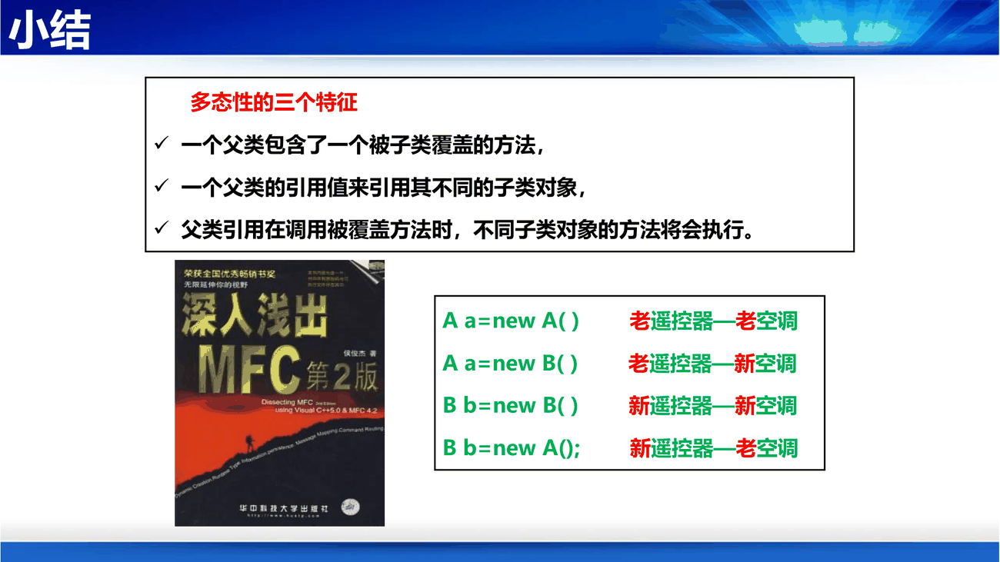

第 4 讲有 40 多页在讲面向对象的基本概念，其中大半是重复的（对象、类、消息讲了三遍）。这里先把骨架立好，第 4 讲那节就只需要看"多态的误区"和"覆盖 vs 重载"。
课件第 4 讲第 42 页的定义：对象是个体或事物的抽象表示，有属性（Attribute，对象的性质，其值定义对象状态）和操作/方法（Operation/Method，对象的行为，表示对象提供的服务）。
以汽车为例：属性是发动机、变速箱、轮胎、车身、座椅；方法是启动、加速、刹车、保养、修理。
补判断一个名词是不是对象，看它有没有"状态会变"这件事。 "红色"不是对象（它是属性值），"红灯"是对象（它可以从红变绿）。第 5 讲找类时会专门讲"误把属性当类"这个坑。
课件第 43 页用"黑盒子"描述对象：外界只能通过界面操作它，代码和数据都藏在内部。这一句就是封装的全部思想，后面第 6 讲"信息隐藏"只是把它上升为设计原则。
类是对一组具有相同特征对象的抽象；对象是类的实例，类是创建对象的模板。
课件第 44 页的对照很到位：
new 出来之后才有状态）。补一个常被忽略的细节：类不只封装属性，也封装"这类对象允许做哪些操作"。所以类是双重的约束——规定有什么数据，也规定能对它做什么。
课件第 45 页：消息传递是实现对象间通讯和协作的基本手段。格式是 接收对象名.操作名(参数)，例如：
学生:王宏博 → 课程注册中心 : registerCourse(course-name)
MyCircle.Show(Green) // 让半径 4、圆心 (100,200) 的圆以绿色显示
消息分两类：同步消息（请求者等待响应者的处理结果）和异步消息（发出后继续工作，不等待）。
补课件第 5 讲第 31 页给了一组极好的生活类比，值得记住：
这个类比在第 5 讲画顺序图时直接决定箭头形状（实心箭头 = 同步，开叉箭头 = 异步）。
课件第 49 页给出封装的三个必要条件：
三者缺一不可。只有 private 字段但没有公开接口，那不叫封装，叫"锁死了"；只有接口但内部随便访问，那也不叫封装。
补封装和信息隐藏不是一回事，考试爱在这里设陷阱。封装是语言机制（把数据和操作打包，用访问修饰符控制）；信息隐藏是设计原则（只暴露必需的信息）。封装是实现信息隐藏的手段之一，但封装了不等于隐藏好了——一个 public 的 getter 把所有内部字段原样吐出来，语法上封装了，设计上一点没隐藏。
继承表示类与类之间的一般与特殊关系，子类共享父类的属性和操作，也可以有自己的独特部分。
补继承的代价（课件没讲，但第 6 讲的设计原则会用到）：继承是最强的耦合。父类改一个方法签名，所有子类都得跟着改。所以设计原则里有一条隐含结论——能用组合（成员变量）解决的就别用继承，继承只留给真正的"is-a"关系。
课件第 53 页给出多态的三个特征，这三个条件必须同时成立：
课件第 68 页用"遥控器—空调"做了极好的类比：
| 写法 | 类比 | 结果 |
|---|---|---|
A a = new A() |
老遥控器配老空调 | 正常 |
A a = new B() |
老遥控器配新空调 | 正常，能按（多态生效） |
B b = new B() |
新遥控器配新空调 | 正常 |
B b = new A() |
新遥控器配老空调 | 出错（老空调没有新按钮） |

课件第 62 页把结论写成了一句话，这是本节最该背的一句：
"引用"所能够调用的"方法"取决于"引用"的类型，而该"方法"如何具体实现取决于"对象"的类型。
补为什么 B b = new A() 会出错？ 编译期看声明：b 声明为 B，编译器允许你调 b.fun3()（B 特有的方法）。运行期看对象：实际指向的是 A 的实例，而这个对象体内根本没有 fun3 的代码。允许调用的名单是编译期定的，可执行的代码是运行期找的，两边对不上就炸。这也是"向下转型"（把 A 引用强转成 B 引用）危险的原因：编译器信了你，运行时未必有。
这两个词中文只差一个字，含义完全不同：
| 覆盖 Override | 重载 Overload | |
|---|---|---|
| 发生位置 | 父子类之间 | 同一个类内部 |
| 方法名 | 相同 | 相同 |
| 参数表 | 必须相同 | 必须不同（个数或类型） |
| 作用 | 子类改写父类行为，是多态的前提 | 同一操作支持多种输入形式 |
| 例 | 子类 B 重写 getValue() |
setValue(int) 与 setValue(String) |
补一句话区分：覆盖是"儿子不听爹的"，重载是"一个人有好几副面孔"。只有覆盖才和多态有关，重载只是语法糖（编译期就决定了调哪个）。